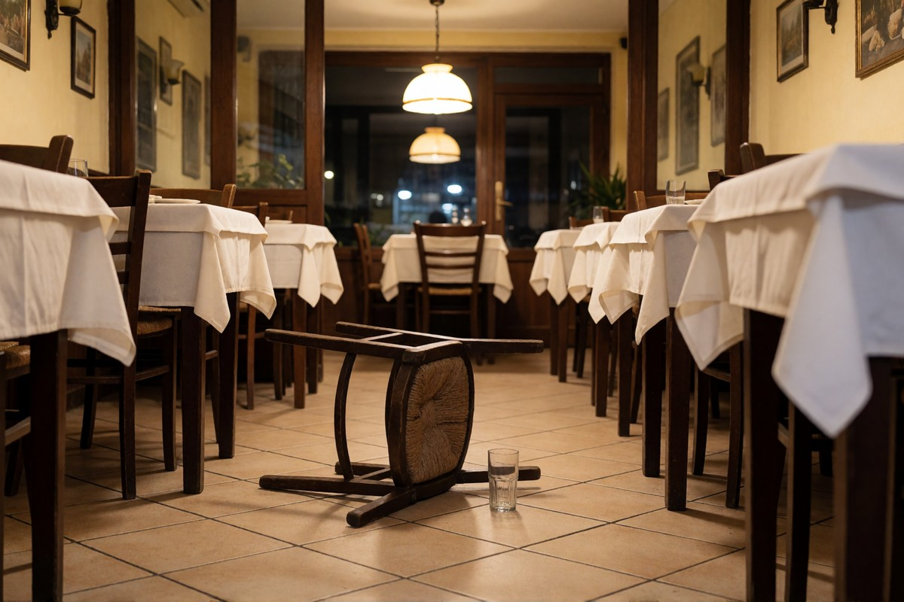

Mafia e antimafia · 18 novembre 2026
Estorsione con metodo mafioso a Trento, otto misure in sei province

Un debito preteso con le minacce, un pestaggio dentro il locale, due arresti in flagranza. Per la Direzione distrettuale antimafia di Trento è estorsione aggravata dal metodo mafioso: otto indagati, misure eseguite in quattro regioni.
di Franco Zanghì
Un ristorante di Trento, un debito che secondo chi lo pretendeva andava pagato subito, e poi — secondo l'accusa — minacce, violenze e una spedizione punitiva dentro il locale. Per la Direzione distrettuale antimafia di Trento il reato è estorsione aggravata dal metodo mafioso.
Le misure
Mercoledì 18 novembre i carabinieri della Compagnia di Trento hanno eseguito un'ordinanza di custodia cautelare firmata dal giudice per le indagini preliminari del Tribunale di Trento su richiesta della Direzione distrettuale antimafia. Gli indagati sono 8.
Le misure sono state eseguite quasi tutte lontano dal Trentino, con i carabinieri dei territori: a Padova, a Mestre, a Treviso e a Castelfranco Veneto, a Carpi, a Firenze e a Signa, a Novara. Sei province, quattro regioni.
Come comincia la storia
Secondo la ricostruzione degli investigatori tutto parte nei primi giorni di ottobre, quando i carabinieri della Radiomobile di Trento intervengono in un ristorante della città. Il titolare è una delle due persone offese. Alcuni degli odierni indagati pretendono il pagamento immediato di un debito presunto e ingente, con minacce gravi e ripetute.
Il 24 ottobre, sempre secondo l'accusa, due degli indagati entrano nel ristorante e aggrediscono una delle vittime: i carabinieri la definiscono una vera e propria spedizione punitiva. I due vengono arrestati in flagranza.
Il lavoro successivo della Sezione operativa della Compagnia di Trento avrebbe ricostruito il resto: richieste di denaro arrivate anche attraverso bonifici bancari e, in un'altra occasione e sulla base della denuncia delle vittime, perfino un sequestro di persona a scopo di estorsione.
Perché l'aggravante mafiosa
Per gli inquirenti gli 8 sarebbero i referenti di gruppi distinti, residenti in zone diverse d'Italia, che agivano in modo coordinato: una struttura organizzata, con una forte capacità di intimidazione e la disponibilità a usare la violenza. È questo il presupposto dell'aggravante del metodo mafioso.
Va detto con chiarezza che si tratta dell'ipotesi dell'accusa: l'aggravante è contestata, non accertata, e nessuna delle fonti collega gli indagati a un clan con un nome. Le due persone offese vivono a Trento, hanno denunciato e non vengono identificate.
Gli 8 indagati sono da considerarsi innocenti fino a sentenza definitiva: l'indagine è nella fase preliminare e le accuse andranno verificate davanti a un giudice, nel contraddittorio con la difesa. Alla data di pubblicazione non risultano dichiarazioni pubbliche dei difensori.
Il punto
Un ristorante a Trento, un debito preteso con la paura, un pestaggio nel locale, due arresti in flagranza a ottobre e ora 8 misure cautelari in 6 province. L'ipotesi è estorsione aggravata dal metodo mafioso, e a decidere saranno i giudici. Resta la domanda che conta: quando qualcuno chiede soldi con la paura, quanti trovano il coraggio di andare dai carabinieri?
Fonti
- il Dolomiti, «Spedizioni punitive, minacce, violenze e un sequestro per riscuotere un debito: otto persone indagate per estorsione aggravata dal metodo mafioso», 18 novembre 2026
- il T Quotidiano, «Trento, spedizioni punitive nel ristorante e minacce per riscuotere presunti debiti: otto indagati per estorsione mafiosa», 18 novembre 2026
- l'Adige, «Estorsioni con metodo mafioso, otto misure cautelari: blitz dei carabinieri anche a Trento», 18 novembre 2026
- l'Adigetto, il comunicato dei carabinieri di Trento, 18 novembre 2026
- TrevisoToday, «Estorsione con metodo mafioso: otto arresti in tutta Italia, due nella Marca», 18 novembre 2026
- il Gazzettino e Leggo, la ricostruzione del pestaggio nel locale, 18 novembre 2026
- Giornale L'Ora, il comunicato sull'esecuzione delle otto misure in sei province, 18 novembre 2026
Indagini preliminari in corso alla data di pubblicazione: l'aggravante del metodo mafioso è contestata dall'accusa e non accertata, e per tutti gli indagati vale la presunzione d'innocenza fino a sentenza definitiva.
Questo articolo nasce dalla pagina Gli Eroi dell'Abisso, dove la stessa storia è raccontata in video.